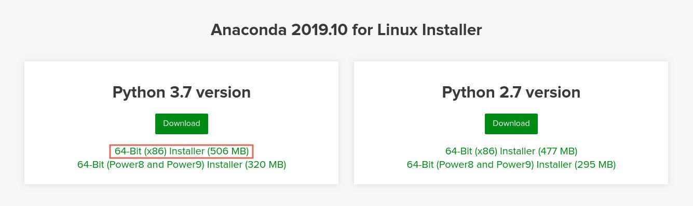
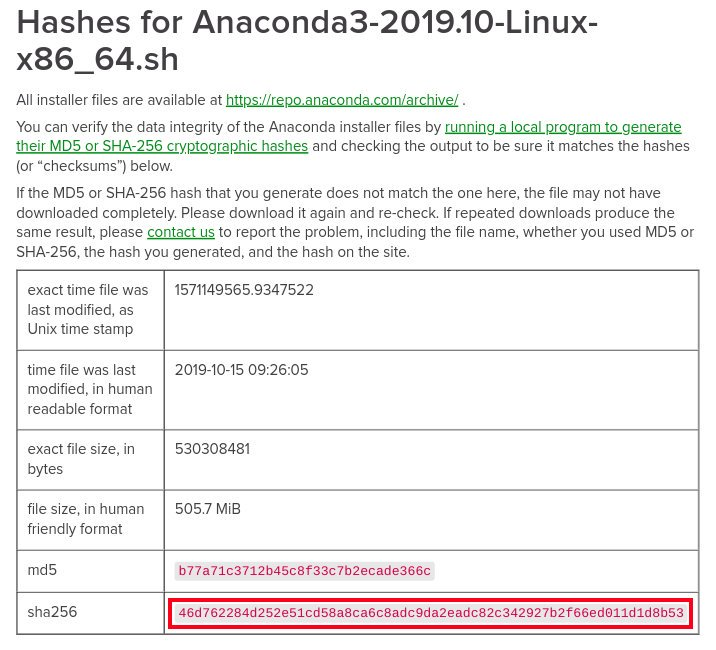

在 CentOS 8 上安装 Anaconda
Anaconda 是最受欢迎的 Python/R 数据科学和机器学习平台。它用于大规模数据处理，预测分析和科学计算。
在本教程中，我们将解释如何在 CentOS 8 上安装 Anaconda Python Distribution 。
Anaconda 发行版附带了 1500 多个开源数据包。它还包括 conda 命令行工具和名称为 Anaconda Navigator 的桌面图形用户界面。
安装 Anaconda
在撰写本文时， Anaconda 的最新稳定版本为 2019.10 。在下载 Anaconda 安装程序脚本之前，请访问 Anaconda 下载页面，并检查是否有可用于 Python 3 的 Anaconda 新版本可供下载。

完成以下步骤以在 CentOS 8 上安装 Anaconda ：
-
使用从“下载”页面复制的链接下载 Anaconda 安装脚本：
wget -P /tmp https://repo.anaconda.com/archive/Anaconda3-2019.10-Linux-x86_64.sh下载可能需要一些时间，具体取决于您的连接速度。
如果要在台式计算机上安装 Anaconda ，则可以使用 Web 浏览器下载脚本。
-
使用以下
sha256sum命令验证脚本的数据完整性：sha256sum Anaconda3-5.3.1-Linux-x86_64.sh输出应如下所示：
46d762284d252e51cd58a8ca6c8adc9da2eadc82c342927b2f66ed011d1d8b53 /tmp/Anaconda3-2019.10-Linux-x86_64.sh确保上面命令中打印的哈希值与下载页面的哈希值匹配。

-
通过执行安装脚本来启动 Anaconda 安装过程：
bash Anaconda3-2019.10-Linux-x86_64.sh您应该看到类似以下的输出：
Welcome to Anaconda3 2019.10 In order to continue the installation process, please review the license agreement. Please, press ENTER to continue >>>按
ENTER以继续，然后按ENTER以滚动浏览许可证。系统会要求您批准许可条款：Do you accept the license terms? [yes | no] [no] >>> yes键入
yes接受许可证，安装程序将要求您选择安装位置：Anaconda3 will now be installed into this location: /home/linuxize/anaconda3 - Press ENTER to confirm the location - Press CTRL-C to abort the installation - Or specify a different location below默认位置适合大多数用户。按
ENTER确认位置，安装过程将继续。如果出现错误提示
bunzip2: command not found，请bzip2使用以下命令安装软件包sudo dnf install bzip2，然后重新运行安装脚本安装可能需要一些时间才能完成。完成后，您将看到以下输出：
Preparing transaction: done Executing transaction: done installation finished. Do you wish the installer to initialize Anaconda3 by running conda init? [yes | no]键入
yes，然后按ENTER，脚本将添加conda到您的PATH：==> For changes to take effect, close and re-open your current shell. <== If you'd prefer that conda's base environment not be activated on startup, set the auto_activate_base parameter to false: conda config --set auto_activate_base false Thank you for installing Anaconda3! ...要激活 Anaconda 安装，您可以关闭并重新打开 shell ，或通过键入以下命令将新的环境变量加载到当前的 shell 会话中：
source ~/.bashrc -
使用
conda命令来验证 Anaconda 的安装。以下命令将显示有关安装的信息：conda infoactive environment : base active env location : /home/vagrant/anaconda3 shell level : 1 user config file : /home/vagrant/.condarc populated config files : conda version : 4.7.12 conda-build version : 3.18.9 python version : 3.7.4.final.0 ...
更新 Anaconda
更新 Anaconda 是一个非常简单的过程，首先使用以下方法更新 conda 工具：
conda update conda
当提示您确认更新时，键入 y 以继续。
更新 conda 后，继续进行 Anaconda 更新：
conda update anaconda
与上一个命令相同，出现提示时，键入 y 以继续。
不要忘记定期更新您的 Anaconda 安装。
卸载 Anaconda
要从 CentOS 系统上卸载 Anaconda ，请首先删除 Anaconda 安装目录：
rm -rf ~/anaconda3
编辑 ~/.bashrc 文件，然后从 PATH 环境变量中删除 Anaconda 目录：
〜 / .bashrc
# >>> conda initialize >>>
# !! Contents within this block are managed by 'conda init' !!
__conda_setup="$('/home/linuxize/anaconda3/bin/conda' 'shell.bash' 'hook' 2> /dev/null)"
if [ $? -eq 0 ]; then
eval "$__conda_setup"
else
if [ -f "/home/linuxize/anaconda3/etc/profile.d/conda.sh" ]; then
. "/home/linuxize/anaconda3/etc/profile.d/conda.sh"
else
export PATH="/home/linuxize/anaconda3/bin:$PATH"
fi
fi
unset __conda_setup
# <<< conda initialize <<<
运行以下 rm 命令从用户主目录中删除隐藏的文件和文件夹：
rm -rf ~/.condarc ~/.conda ~/.continuum
结论
现在您在 CentOS 系统已经下载并安装了 Anaconda ，您可以查看官方的 conda 入门指南。